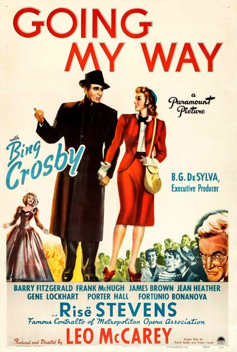

Going My Way

Starring: Bing Crosby, Barry Fitzgerald, Risë Stevens
Director: Leo McCarey
Writer: Frank Butler, Frank Cavett
Producer: Leo McCarey
Going My Way is a 1944 American musical comedy drama film directed by Leo McCarey and starring Bing Crosby and Barry Fitzgerald. Written by Frank Butler and Frank Cavett, based on a story by McCarey, the film is about a new young priest taking over a parish from an established old veteran.
Trivia
- Won the Academy Award for Best Picture.
- Won the Academy Award for Best Supporting Actor.
- Won the Academy Award for Best Actor.
- Won the Academy Award for Best Director.
- Won the Academy Award for Best Story.
- Won the Academy Award for Best Writing, Adapted Screenplay.
- Selected for the National Board of Review: Top Ten Films.
- Also nominated for: Academy Award for Best Cinematography, Black-and-White; Academy Award for Best Film Editing.
- Risë Stevens, whose character is seen onscreen performing the lead role in a Metropolitan Opera (the Met) production of Carmen, was an actual performer with the Met when the film was made.
- A few years later she would earn enormous personal triumph as the Met's Carmen in the famous Tyrone Guthrie production of 1951, becoming the leading Carmen of her generation.
Filming Locations
- Santa Monica
Previous Showings
5 Runs • 1 Festival
Original Billings: 2 runs (June 14 - August 6, 1944)
Original Run: June 14, 1944 (Wednesday)
All runs on record (5):
- June 14, 1944 (Wednesday)Bing Crosby
- August 6, 1944 (Sunday - Saturday)Bing Crosby
- March 7, 1988w/ Road to Rio
- May 6 - 7, 1993w/ An American in Paris
- August 2 - 3, 2007Summer 2007, including Films Starring Fred Astairew/ Yolanda and the Thief